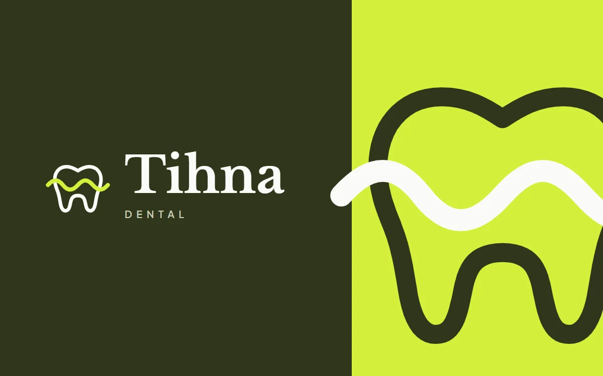

Digitális munkák · Arculat
Grafika és arculat
Egy márka akkor erős, ha első ránézésre felismerhető. Logókat, színvilágot, tipográfiát és kampányvizuálokat tervezek, amelyek egységes, karakteres képet adnak – a névjegytől a közösségimédia-posztig.
← Vissza a digitális kategóriákhoz